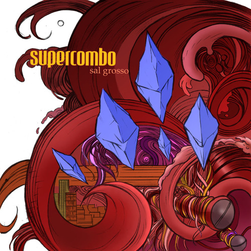
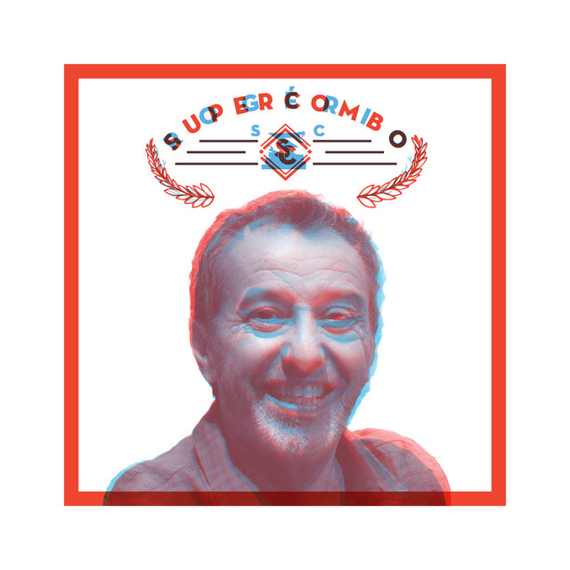
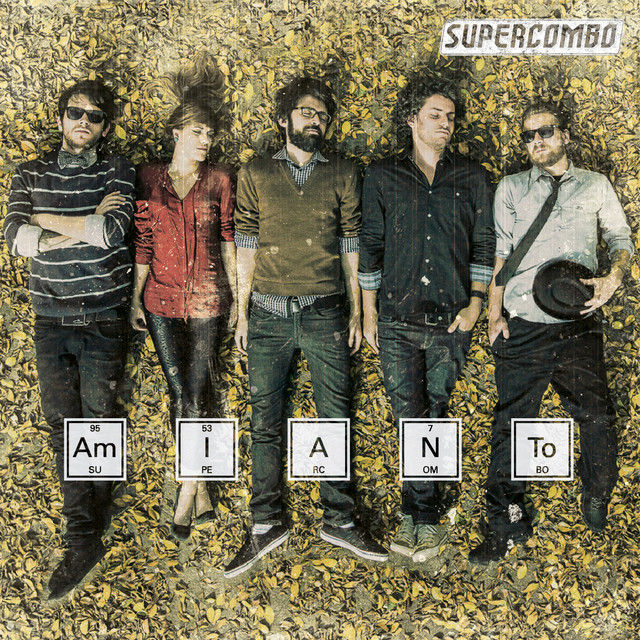
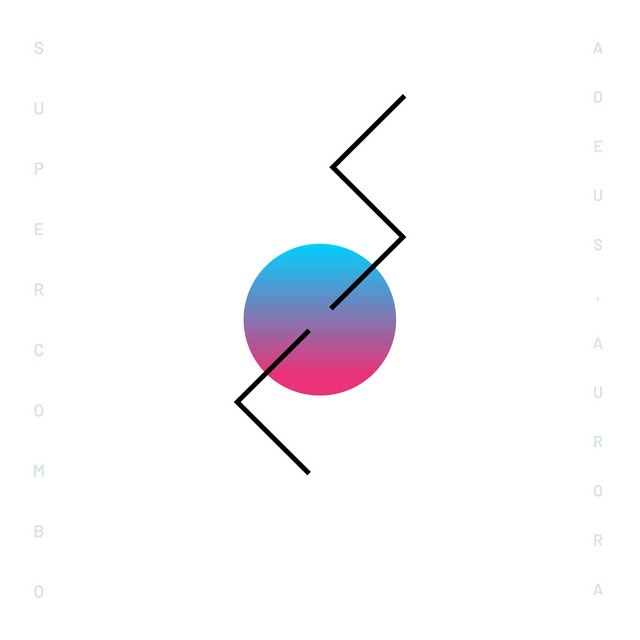

Supercombo
A Supercombo é uma banda brasileira de rock alternativo formada em 2007, conhecida por suas letras criativas e cheias de metáforas, que misturam humor, crítica social e reflexões sobre o cotidiano.
Mais Sobre o Supercombo
A Supercombo é uma banda de rock alternativo formada em 2007, em Vitória (ES), pelo vocalista Leonardo Ramos. Inicialmente, o projeto começou como um trabalho solo, mas ao longo dos anos ganhou novos integrantes e passou a se consolidar como grupo. A sonoridade da banda mistura rock, pop e elementos eletrônicos, sempre acompanhada de letras criativas e bem-humoradas, que abordam desde situações cotidianas até reflexões sobre sentimentos e sociedade.
O reconhecimento em nível nacional veio em 2014, quando a Supercombo participou do programa SuperStar, da TV Globo, conquistando o público com músicas como Piloto Automático, que se tornou um dos maiores sucessos do grupo. A partir daí, a banda ampliou sua base de fãs e passou a marcar presença em grandes festivais e turnês pelo Brasil.
Com álbuns como Sal Grosso (2007), Rogério (2011), Amianto (2014), Rogério (Ao Vivo) (2015) e Adeus, Aurora (2019), a Supercombo consolidou seu espaço no cenário musical brasileiro. Suas composições combinam leveza e intensidade, transformando temas simples em mensagens marcantes. Até hoje, o grupo continua ativo, inovando em sua musicalidade e mantendo uma forte conexão com seu público.
“Acho que, principalmente internamente, a gente aprendeu muito. A gente era muito verde ainda, viver aquele backstage, o lance do profissionalismo… Os caras gritando um com o outro, tu olha e alguém diz: ‘Sorria, tu tá ao vivo agora’.”
Pedro Ramos (sobre a experiência no programa Superstar)
“A gente viajava e às vezes parava em um restaurante no meio da estrada, aí vinha uma família e falava: ‘A gente está torcendo por vocês’… banda de rock no Brasil, a exceção é ser muito grande… Mas o lance é que acontece, no país inteiro tem espaço para o rock, apesar de não ser mainstream.”
Carol Navarro (sobre receber apoio do público após o programa)
Curiosidades da banda:
- O nome Supercombo vem da ideia dos “combos” de videogames e também de lanchonete — algo que mistura várias coisas diferentes em um só lugar. Isso reflete bem o estilo da banda, que mistura gêneros musicais e referências diversas.
- O álbum Rogério (2011) trouxe um personagem fictício, que simboliza as inseguranças, ansiedades e problemas que todos carregam. Segundo os integrantes, todo mundo tem um pouco de Rogério dentro de si.
- A música Piloto Automático (2014) se tornou um dos maiores sucessos da banda. Ela fala sobre a rotina automática da vida moderna e viralizou nas redes sociais, ajudando a consolidar a fama nacional do grupo.
- Algumas músicas da Supercombo chegaram a fazer parte de trilhas sonoras de videogamesindependentes, reforçando a relação da banda com o universo geek.
- A baixista Carol Navarro não só é um dos rostos mais conhecidos da banda, como também se tornou inspiração para muitas mulheres que querem seguir carreira na música.
- O Supercombo é conhecido por sua interação próxima com os fãs, seja em shows, nas redes sociais ou em lives. Eles valorizam muito essa conexão, que ajuda a manter a base de fãs fiel.
Discografia
-

Sal Grosso (2007)
-

Rogério (2011)
-

Amianto (2014)
-

Adeus, Aurora (2019)
Ouça Agora!
Clipe
Supercombo - Amianto
“Quase toda vez que eu vou dormir
Não consigo relaxar (não consigo relaxar)
Até parece que meus travesseiros
Pesam uma tonelada”
Supercombo, Piloto Automático
Mais informações
Conheça mais sobre a Supercombo clicando aqui